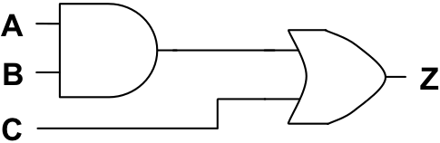
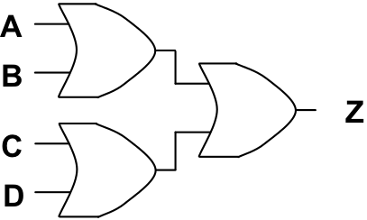

The arithmetic that is used to reason about two-state systems was first developed by George Boole in 1854. Boolean algebra is a mathematics based on three fundamental operators: and , or , and not ; and the variables on which they operate. Boolean variables are binary, having only two valid states “1” (representing “true”) and “0” (representing “false”).
The operator and is written as a dot “ ● ”, or is written as a plus “+”, and not is written as a horizontal bar drawn over the expression being negated. The behavior of these three Boolean operators is identical to the behavior of the corresponding logic gates. Thus, the expression “A ● B”, meaning “A and B”, will be “1” (true) when the variables A and B are both “1” (true). The expression “A + B”, meaning “A or B”, will be true when either or both variables are true. Not A, written “ A ”, will be “0” when A is “1” and “1” when A is “0”.
The relationship between the Boolean operators and the fundamental logic gates is illustrated in . In the illustration, the Boolean variables A and B correspond to the inputs to the circuit and the variable Z corresponds to the output.
Consider the following circuit and its corresponding Boolean expression.
Z = ( A + B ) ● C
We can be sure that the circuit and the expression are functionally equivalent by examining how the Boolean expression could be derived from the circuit. Since inputs A and B are fed into an or gate in the circuit, the variables A and B are combined via the corresponding “+” operator in the Boolean expression. The output of the or is fed into an and gate (along with input C) in the circuit. Thus, the result of the expression “(A + B)” is combined with variable C using the “ ● ” operator in the Boolean expression.
Z = A ● B
Z = A + B
Z = ¬ A
Boolean expressions for the three fundamental logic gates
As in ordinary algebra, Boolean algebra uses parentheses to indicate which operands go with which operators. The Boolean expression “A + (B ● C)” represents a completely different circuit from “(A + B) ● C”. In the first, B and C are fed into an and gate, with the result being sent (along with A) into an or gate. In the second, A and B are fed into an or gate, with the result being combined with C via an and gate.
As you may be beginning to suspect, there is a direct correspondence between Boolean expressions and logic circuits. Every logic circuit that can ever be constructed will have a corresponding Boolean expression, and every valid Boolean expression that can ever be written maps to an equivalent logic circuit. The process of converting between the two representations is quite mechanical – simply use the substitutions of , being sure to parenthesize Boolean expressions in a manner that preserves which operators go with which operands.
Boolean algebra provides computer scientists and engineers with a powerful tool for concisely representing circuits and reasoning about their behavior. While the details are beyond the scope of this book, Boolean algebra allows us to do things like prove that two different circuits compute the same function or find simpler (and thus less expensive) ways of implementing the functionality of a circuit.
Exercises for
Write the Boolean expression corresponding to the following circuit. 
Write the Boolean expression corresponding to the following circuit. 